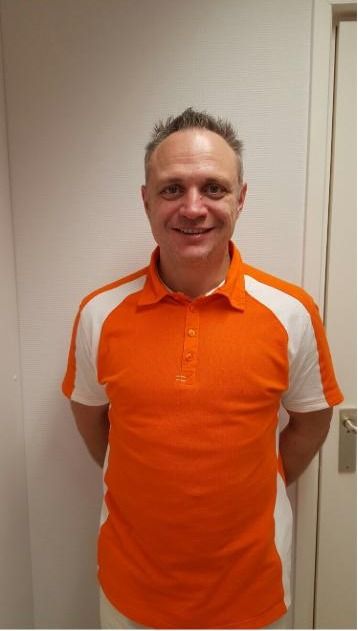

De patiënt is de koning(in).
Een tandartspraktijk aan de Aweg, vlak bij de Westerhaven. Tandarts Balázs Gyovai doet elke behandeling zelf en neemt daar de tijd voor. Persoonlijke aandacht heeft hier de hoogste prioriteit.

Van Boedapest naar de Aweg
Balázs Gyovai werkte in Hongarije, Engeland en Zwitserland voordat hij zich in Groningen vestigde. Die jaren tussen verschillende culturen leerden hem vooral één ding: goed samenwerken met de patiënt in de stoel.
- 1999AfgestudeerdMedische universiteit in Boedapest
- 2001Eigen praktijkIn Hongarije
- LaterInternationale praktijkWerk in onder meer Engeland en Zwitserland
- 2014Naar NederlandEn sindsdien tandarts aan de Aweg in Groningen
Alles bij één tandarts
Pijnloos behandelen, moderne apparatuur, gesteriliseerde instrumenten en latexvrije handschoenen.
Voor parodontologie, orthodontie of kaakchirurgie verwijzen we u door naar een specialist.
Controle en preventie
Periodieke controle, röntgenfoto's, verdoving en preventieve zorg zoals sealen.
Herstel
Vullingen, kronen en bruggen. Wortelkanaalbehandeling en tandvleesbehandeling.
Vervangen
Implantaten, kunstgebitten en een noodgebit als het snel moet.
Verder
Extracties, tanden bleken en een opbeetplaat tegen knarsen.
“De tandarts stelt je gerust, legt alles goed uit en is vooraf duidelijk over de financiën.”Daan, via Google
“Niet iets waar je op zit te wachten maar het was sneller voorbij dan ik auw kon zeggen.”Marlon, over een extractie
Spoed, route en betalen
Spoed
Heftige pijn of een acuut probleem? Neem dan op een werkdag vóór 10.00 uur contact met ons op.
Buiten praktijkuren belt u de spoeddienst:
0900 8602Route
Aweg 17, 9718 CV Groningen.
Met de bus: lijn 7, 8 of 9 tot de Westerhaven, dan 50 meter lopen. Of lijn 35 of 39 tot de H. Colleniusstraat, dan 200 meter.
Met de auto: betaald parkeren in de straat (maximaal 2 uur) of in de Q-Park Westerhaven.
Betalen
U rekent na de behandeling direct bij ons af, het liefst met de pin. De nota declareert u daarna zelf bij uw zorgverzekeraar.
Tot 18 jaar gaat de declaratie rechtstreeks naar de verzekeraar.
Neem bij elk bezoek uw zorgpas en een geldig legitimatiebewijs mee.
Telefonisch bereikbaar elke werkdag van 08.30 tot 11.30 uur, en van maandag tot en met donderdag ook van 13.00 tot 16.00 uur.
Of mail naar info@kingdental.nl.
Kunt u niet komen? Zeg uw afspraak dan op tijd af.